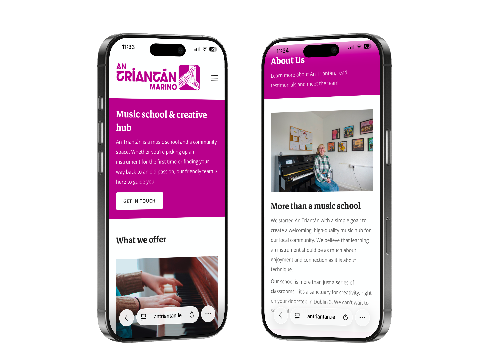

Home  An Triantán
An Triantán
An Triantán is a music school and creative hub based in Marino. They came to me wanted a fresh new website design that reflected a rebrand that they were undergoing at the time. To explore the school's website, visit antriantan.ie
After meeting with the owner of the school and seeing what was needed of me, I made a list what was required of me for this work.
What followed was a project that I really enjoyed, getting to design a website to encourage music and creativity.

With the help of AI I proposed a new site map for the website which created a new 'Student hub' section to home the various pages which only studnets will need. These include policies, fees and news.
I used AI to produce the sitemap below which was shown to the client in order to explain the new information architecture and navigation struture for the site.

The website is viewed often in both desktop and mobile by its users according to our research, so it was essential to me that my new design was completely dynamic. There are no draw backs for users viewing the site on any device.
Another requirement was making sure the content of the website worked well to fit the tone of the new site. I used a combination of my own content writing with the help of AI tools to keep consistency in tone.
.png)